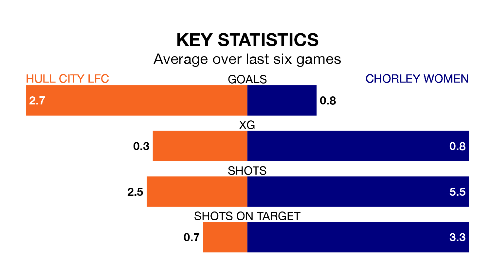

Mid-season relegation candidates Chorley Women face a challenge away against high-flying Hull City LFC on Sunday.
Chorley Women are ninth in the Women's National League Division One – North table, and have picked up three wins and three draws in their 12 games to date.
Hull City, meanwhile, are third in the standings with 28 points, having won nine and drawn one, and are one point behind table-toppers Barnsley Women.
With 34 goals in 12 games so far this season, Hull City are the league's highest scorers with 2.8 goals per game. And they are conceding fewer than average, letting in 15 goals at a rate of 1.2 per game.
Chorley, meanwhile, are below average scorers, with 1.0 goal per game, compared to a league average of 1.7. They have conceded 2.2 goals per game.
The hosts are in reasonable form in the Women's National League Division One North, with four wins and two losses from their last six games.
With no wins and a draw over that period, the away side's form is much worse – they have taken one point from 18, compared to Hull City's 12.
Over the last two years, Hull City and Chorley have played each other twice. Hull City won one of them and they drew the other.
Their last meeting was on April 23, when they played out a 1-1 draw.
Hull City's last match was on February 4, a 3-2 win against Norton and Stockton.
Chorley lost 4-1 against Doncaster Belles Women last time out, on January 28.
Updated: 13:30 (UTC), 12/02/24